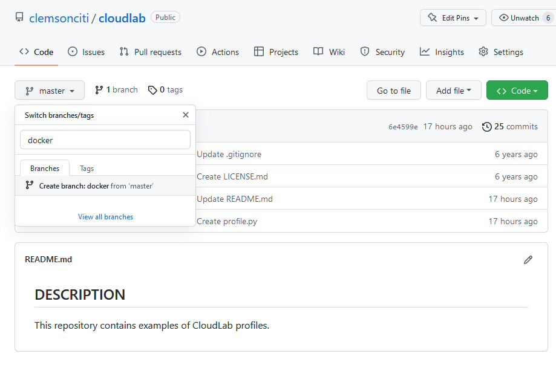

Docker Containers on CloudLab#
1. Setup#
Go to your previouysly created GitHub project repository (on the first day), create a new branch called
dockerfrom themain(ormaster) branch.
Create new branch

Modify the
profile.pyfile to the following content
Modification of profile.py
and modify to add the following components from this link:
The
docker_configdirectory and its content (daemon.json).The
install_docker.shfile.The
profile.pyfile.Check and make sure all the contents are correctly copied!
Go to CloudLab, open your profile, switch to
Editmode and clickUpdate. The newdockerbranch should show up.Instantiate an experiment from this branch.
Only login after the Startup column becomes Finished and type the following command:
sudo docker info | grep "Docker Root Dir"Confirm that you have something similar to the screenshot below

1. Why do we want container?#

2. The issue: who does what?#

3. Inspiration for Docker#

4. Inspiration for Docker: intermodal shipping containers#

5. Modern shipping ecosystem#

6. A shipping container system for applications#

7. Who does what? We don’t care …#

8. Cloud-native applications on container#

9. Hands-on: Getting started#
SSH into your CloudLab experiment.
Check version of Docker:
$ docker version
{: .language-bash}

Docker is client-server application.
Docker daemon (Engine): receives and processes incoming Docker API request and requires root privilege.
Docker Hub registry: collection of public images (https://hub.docker.com/).
Docker client : Talks to the Docker daemon via the docker API and the registry API.
10. Hands-on: Hello world#
Docker
containersare instantiated from Dockerimages.You can check availability of local
imagesandcontainers.
$ docker image ls
$ docker container ls
{: .language-bash}

We can issue the following to start a service that will echo
hello worldto the screen.This requires a Linux container to run the
echocommand.
$ docker run alpine echo hello world
{: .language-bash}
docker: invoke the container engine.run: subcommand to run a container.alpine: name of the image based on which a container will be launched.echo hello world: the command to be executed in the container environment.
$ docker image ls
$ docker container ls
$ docker container ls --all
$ docker run alpine echo hello world
$ docker container ls --all
{: .language-bash}

11. Hands-on: Interactive container#
We can launch a container and get into the shell of the container.
$ docker run -it ubuntu bash
{: .language-bash}

You are now in a new prompt: a shell inside the container
-it: combination of-iand-t.-itells Docker to connect to the container’s stdin for interactive mode-ttells Docker that we want a pseudo-terminal
12. Hands-on: run something interactively#
The following commands are done inside the container.
Let’s attempt to run
figlet
# figlet hello
{: .language-bash}
There will be an error.
The current container does not have the
figletprogram yet.
13. Hands-on: installing and then running#
The following commands are done inside the container.
# apt-get update
# apt-get install -y figlet
# figlet hello
{: .language-bash}

14. Exercise#
Type
exitto shutdown the container and back to your normal terminal.Repeat the process of launching an interactive container from start and try running
figletagain.Is the program still there?
{: .challenge}
15. Hands-on: Background container#
You should have already exited out of the container shell and back to the CloudLab environment.
Run the following command
Press
Ctrl-Cto stop after a few time stamps.
$ docker run jpetazzo/clock
{: .language-bash}
16. Hands-on: Background container#
Run the following command
$ docker run -d jpetazzo/clock
$ docker ps
{: .language-bash}
17. Hands-on: View log of your background container#
Use the first four characters of your container ID to view the log of the running Docker container
Use
--tail Nto only look at the tail of the log.
$ docker container ls
$ docker logs --tail 5 YOUR_CONTAINER_ID
18. Exercise#
Find out how to kill a running container by using
docker kill. {: .challenge}
19. Docker images#
Image = files + metadata
The files form the root filesystem of the container
The metadata describes things such as:
The author of the image
The command to execute in container when starting it
Environment variables to be set
…
Images are made of layers, conceptually stacked on top of each other.
Each layer can add, change, and remove files and/or metadata.
Images can share layers to optimize disk usage, transfer times, and memory use.
{: .slide}
20. Example of a Java webapp#
CentOS base layer
Packages and configuration files added by our local IT
JRE
Tomcat
Our application’s dependencies
Our application code and assets
Our application configuration
{: .slide}
21. The read-write layer#

{: .slide}
22. Containers versus images#
An image is a read-only filesystem.
A container is an encapsulated set of processes running in a read-write copy of that filesystem.
To optimize container boot time, copy-on-write is used instead of regular copy.
docker runstarts a container from a given image.

Object-oriented analogy
Images are conceptually similar to classes
Layers are conceptually similar to inheritance
Containers are conceptually similar to instances
{: .slide}
23. How do we change an image?#
It is read-only, we don’t.
We create a new container from the image
We make changes to the container.
When we are satisfied with the changes, we transform them into a new layer.
A new image is created by stacking the new layer on top of the old image.
{: .slide}
24. Image namespaces#
Official images (ubuntu, busybox, …)
Root namespace.
Small, distro images to be used as bases for the building process.
Ready-to-use components and services (redis, postgresl …)
User (and organizations) images:
<registry_name>/<image_name>:[version]jpetazzo/clock:latest
linhbngo/csc331:latest
Self-hosted images
Images hosted by third party registry
URL/<image_name>
{: .slide}
25. Hands-on: show current images#
If this is a new experiment, go ahead and run the following commands to get some images loaded.
$ docker run hello-world
$ docker run alpine echo This is alpine
$ docker run ubuntu echo This is ubuntu
$ docker image ls
{: .language-bash}

26. Hands-on: search images#
We can search for available images in the public Docker Hub
$ docker search mysql
{: .language-bash}

27. General steps to create an image#
Create a container using an appropriate base distro
Inside the container, install and setup the necessary software
Review the changes in the container
Turn the container into a new image
Tag the image

28. Hands-on: create a container with a base distro#
Remember to note your container ID.
$ docker run -it ubuntu
{: .language-bash}
29. Hands-on: install software inside the container#
# apt-get update
# apt-get install -y figlet
# exit
{: .language-bash}

30. Hands-on: check for differences#
Remember to note your container ID.
$ docker diff 16b0
{: .language-bash}

A: A file or directory was added
D: A file or directory was deleted
C: A file or directory was changed
31. Hands-on: commit changes into a new image#
Remember to note your container ID.
$ docker commit 16b0 ubuntu_figlet_$USER
$ docker image ls
$ docker history fe101
{: .language-bash}

From the screenshot:
The
docker commit ...command created a new image namedubuntu_figlet_lngothat has the following unique id:fe101865e2ed.The
docker image lscommand shows this image.The
docker history fe101shows the layers making up this image, which include the layer that is the base ubuntu image54c9d.
32. Exercise#
Test run the new
ubuntu_figletimage by launching an interactive container using this image, then immediately runfiglet hello world.
{: .challenge}
33. Automatic image construction: Dockerfile#
A build recipe for a container image.
Contains a series of instructions telling Docker/Podman how an image is to be constructed.
The
docker buildcommand builds an image from a Dockerfile.
34. Hands on: writing the first Dockerfile#
The following commands are done in the terminal (Ubuntu WSL on Windows/Mac Terminal).
$ cd
$ mkdir myimage
$ cd myimage
$ nano Dockerfile
{: .language-bash}
Type the following contents into the nano editor
FROM: the base image for the buildRUN: represents one layer of execution.RUNcommands must be non-interactive.Save and quit after you are done.
To build the image
35. Hands on: build the image#
The following commands are done in the terminal (Ubuntu WSL on Windows/Mac Terminal).
Check that you are still inside
myimage
$ pwd
$ docker build -t figlet_$USER .
{: .language-bash}
-tindicates a tag namedfigletwill be applied to the image..indicates that theDockerfilefile is in the current directory.

The build context is the
Dockerfilefile in the current directory (.) and is sent to the container engine. This context allows constructions of images with additional resources from local files inside the build context.The base image is
Ubuntu.For each
RUNstatement, a container is created from the base image for the execution of thecommands. Afterward, the resulting container is committed into an image that becomes the base for the next
RUN.
36. Exercise#
Use
docker image lsanddocker history ...to check which layer is reused for this image.Test run the new
ubuntu_figletimage by launching an interactive container using this image, then immediately runfiglet hello world.
{: .challenge}
37. Hands on: CMD#
Edit your Dockerfile so that it has the following content
CMD: The command to be run if the container is invoked without any command.Rebuild the image with the tag
figlet_cmd_$USER.Run the following command
$ docker run figlet_cmd_$USER
{: .language-bash}

Question: Did we use any additional storage for this new image?
38. Hands on: Overriding CMD#
With CMD, the
-itflag does not behave as expected without a parameter.To override CMD, we can provide a command
$ docker run -it figlet_cmd_$USER
$ docker run -it figlet_cmd_$USER bash
{: .language-bash}

39. Hands on: ENTRYPOINT#
-ENTRYPOINT defines a base command (and its parameters)
for the container.
The command line arguments are appended to those parameters.
Edit
Dockerfileas follows:
Rebuild the image with the tag
figlet_entry_$USER.Run the followings:
$ docker run figlet_entry_$USER golden rams
{: .language-bash}

40. Hands on: Why not both#
ENTRYPOINTandCMDcan be used together.The command line arguments are appended to those parameters.
Edit
Dockerfileas follows:
Rebuild the image with the tag
figlet_both_$USER.Run the followings:
$ docker run figlet_both_$USER golden rams
$ docker run figlet_both_$USER
{: .language-bash}

41. Hands on: Caveat#
/bin/bashdoes not work as expected.
$ docker run -it figlet_both_$USER bash
$ docker run -it --entrypoint bash figlet_both_$USER
# exit
{: .language-bash}

42. Hands on: Importing and building external code#
Create the following file called
hello.c:
Create the following Dockerfile called
Dockerfile.hello:
You can build an image with a specific Dockerfile
$ docker build -t hello_$USER -f Dockerfile.hello .
$ docker run hello_$USER
{: .language-bash}
43. Challenge#
Create an account on Docker Hub.
Find out how to login from the command line and push the recently created
helloimage to your Docker Hub account.
{: .challenge}
44. Networking for container#
How can services provided by a container become available to the world?

45. Hands on: a simple web server#
$ docker run -d -P nginx
$ docker ps
{: .language-bash}
-P: make this service reachable from other computers (--publish-all)-d: run in backgroundWhere is the port?


47. Hands on: How does the container engine know which port to map?#
This is described in the
Dockerfileand can be inspected.The keyword for this action is
EXPOSE.

Why do we have to map ports?
Containers cannot have public IPv4 addresses.
We are running low on IPv4 addresses anyway.
Internally to host, containers have their own private addresses
Services have to be exposed port by port.
These have to be mapped to avoid conflicts.
48. Hands on: manual allocation of port numbers#
$ docker run -d -p 8000:80 nginx
$ docker run -d -p 8080:80 -p 8888:80 nginx
{: .language-bash}
Convention:
port-on-host:port-on-containerCheck out the web servers at all of these ports
49. Integrating containers into your infrastructure#
Manually add the containers to the infrastructure via container-generated public port.
Predetermine a port on the infrastructure, then set the corresponding port mapping when run the containers.
Use a network plugin to connect the containers with network tunnels/VLANS …
Deploy containers across a physical cluster using Kubernetes.
50. Container network model#
Provide the notion of a
networkto connect containersProvide top level command to manipulate and observe these networks:
docker network
$ docker network
$ docker network ls
{: .language-bash}

What’s in a container network?
Conceptually, it is a virtual switch
It can be local to a single Engine (on a single host) or global (spanning multiple hosts).
It has an associated IP subnet.
The container engine will allocate IP addresses to the containers connected to a network.
Containers can be connected to multiple networks.
Containers can be given per-network names and aliases.
The name and aliases can be resolved via an embedded DNS server.
51. Hands on: create a network#
$ docker network create ramnet
$ docker network ls
{: .language-bash}

52. Hands on: placing containers on a network#
$ docker run -d --name es --net ramnet elasticsearch:2
$ docker run -it --net ramnet alpine sh
# ping es
# exit
{: .language-bash}

{% include links.md %}